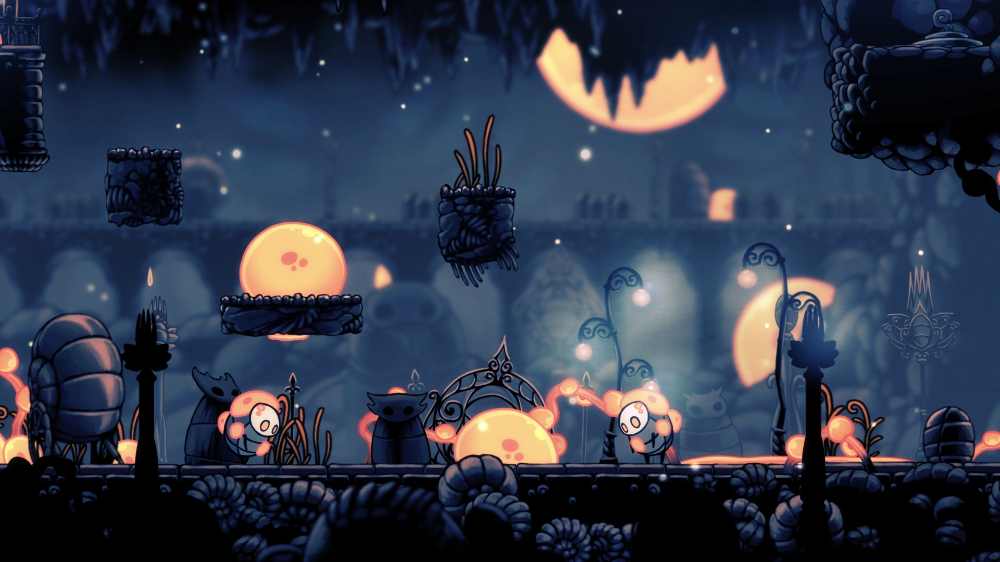
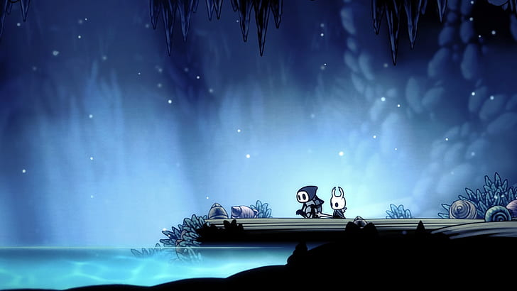
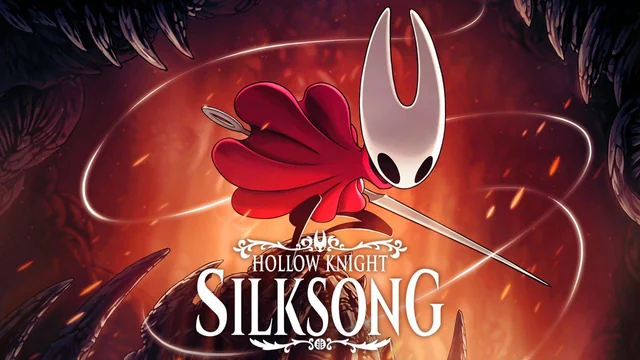

Hollow Knight se passa no reino subterrâneo de Hallownest, um lugar antigo e em ruínas que já foi o lar de uma civilização próspera. Com o passar do tempo, o reino entrou em decadência, deixando para trás vestígios de sua antiga grandeza espalhados por suas diversas regiões.
No passado, Hallownest foi governado pelo Rei Pálido, que trouxe ordem aos habitantes, mas também fez com que antigas crenças fossem esquecidas. Entre elas estava a devoção a uma entidade conhecida como Radiância, cuja influência parecia ter desaparecido. Porém, ela veio a retornar de forma inesperada.
Uma misteriosa infecção passa a se espalhar pelo reino, afetando a mente dos insetos e alterando completamente seu comportamento. Habitada dentro dos sonhos e memórias dos habitantes, ocasionando a queda de Hallownest.
É nesse cenário que surge um pequeno e silencioso viajante, que explora as profundezas do reino em busca de respostas. Ao longo da jornada, o jogador enfrenta criaturas corrompidas, descobre segredos antigos e se aprofunda em um mundo marcado por mistério e melancolia.

A jogabilidade de Hollow Knight mistura exploração e combate em um mundo cheio de desafios e segredos. Enquanto as batalhas contra chefes exigem precisão e atenção, momentos mais calmos destacam a ambientação e a beleza de Hallownest.

As trilhas sonoras de Hollow Knight ajudam a construir a atmosfera do jogo, alternando entre músicas calmas quando em exploração e temas intensos quando em combate.
Exemplos de trilhas sonoras:
Greenpath (Ambiente)
The Grimm Troupe (Chefe)
